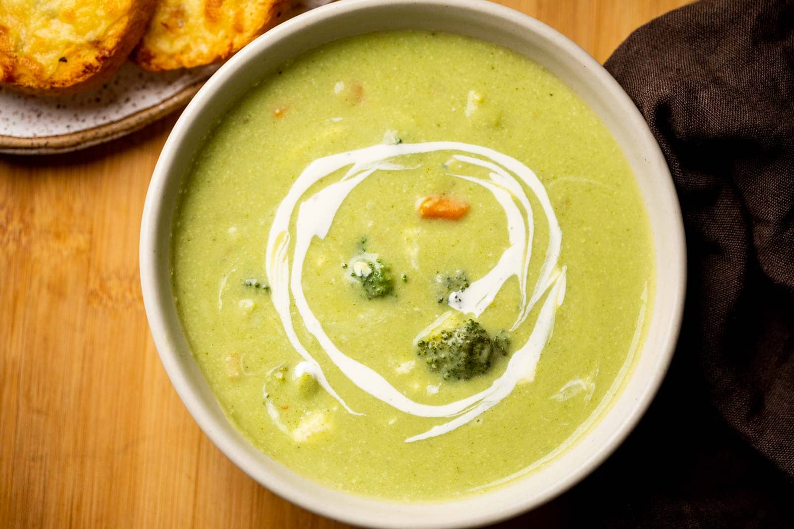

<!DOCTYPE html>
<html lang="en">
<head>
    <meta charset="UTF-8">
    <meta name="viewport" content="width=device-width, initial-scale=1.0">
    <title>Document</title>
</head>
<body>
    
</body>
</html>


<!DOCTYPE html>
<html lang = "en">
    <head>
        <meta charset = "UTF-8">
        <title>Broccoli Soup</title>
    </head>
    <body>
        <h1>Broccoli Soup</h1>
        
        <h3>Description</h3>
        <h4>Ingredients</h4>
        <ul>
            <li>2 tablespoon olive oil</li>
            <li>1 large onion, diced</li>
            <li>4-6 garlic cloves, rough chopped</li>
            <li>1 jalapeno, diced fine</li>
            <li>7 cups broccoli, cut into bite-sized florets</li>
            <li>4 cupsveggie broth</li>
            <li>1 cup water</li>
            <li>1 bay leaf</li>
            <li>1 teaspoon salt</li>
            <li>1 teaspoon corriander</li>
            <li>1 teaspoon oregano</li>
            <li>1/2 teaspoon pepper</li>
            <li>3/4 cup raw cashews</li>
            <li>1-2 large handful baby spinach</li>
        </ul>
        <h4>Steps</h4>
        <ol>
           <li>Heat oil in a big pot over medium heat, and add the onion, garlic and jalapeno,  stirring occasionally, letting the onions get golden, about 5 minutes.</li>
           <li>Add the broccoli, broth, water, bay leaf, coriander, oregano, salt, and pepper. The liquid should just cover the veggies. Cover, bring to a boil, turn heat down and simmer gently until broccoli is tender, about 10-12. minutes. Turn heat off and remove bay leaf.</li>
           <li>BLEND: Place roughly 1 cup of the broccoli and 1 cup of broth into a blender. Let cool 5 minutes. Add the cashews.</li>
           <li>Add one more cup broccoli and one more cup broth. Blend again until silky smooth.</li>
           <li>To the blender, add 1-2 big handfuls of fresh baby spinach for that extra vibrant “green” color, and blend until fully incorporated and smooth.</li>
           <li>Pour this back in the broccoli soup pot, mix and heat gently over low heat, careful not to boil or simmer too long, or you will lose the lovely vibrant green color.</li>
           <li>Taste for salt, heat, and acid. Add a little squeeze of lime if you like, or extra chili flakes or more pepper.</li>
           <li>Garnish with fresh cilantro or scallions or a wedge of lime.</li>
        </ol>
    </body>
</html>
